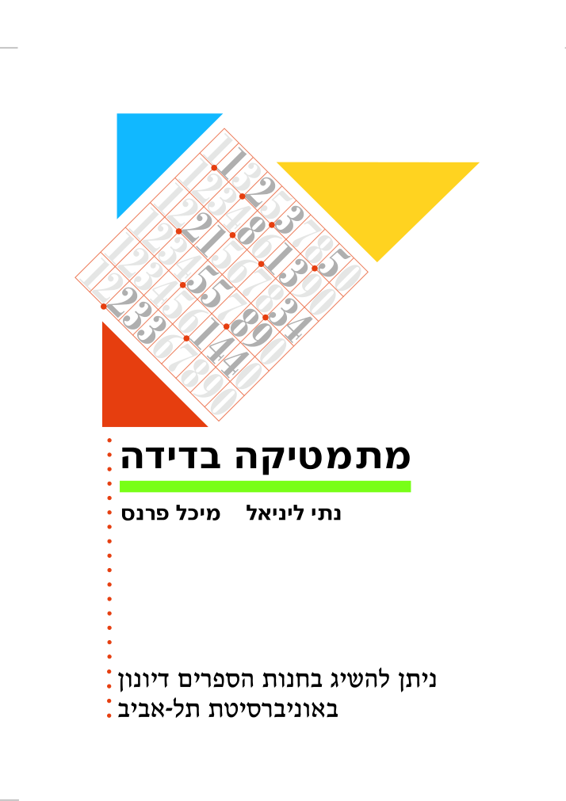

Academic Homepage
Michal Parnas
Professor of Computer Science
Academic College of Tel-Aviv-Yaffo
Welcome to my academic homepage. My research focuses on theoretical computer science, particularly algorithms, computational complexity, and property testing.
Research Interests
My work investigates algorithmic and combinatorial questions, with particular interest in sublinear algorithms, matrix rank measures, and their connections to computational complexity.
Publications
Journal articles and recent research. Complete and updated list on Google Scholar ↗
- On the Binary Rank of Matrices with Constant Real Rank
Michal Parnas. arXiv preprint, 2026. Paper ↗ - Testing the Binary Rank with Polynomial Query Complexity
Michal Parnas. arXiv preprint, 2026. Paper ↗ - Mathematical and computational perspectives on the Boolean and binary rank and their relation to the real rank
Michal Parnas. Preprint, 2026. Paper ↗ - A study of the binary and Boolean rank of matrices with small constant real rank
Michal Parnas and Adi Shraibman. Discrete Applied Mathematics (2026); earlier conference version at FCT 2025, 2026. Paper ↗ - Testing Intersectingness of Uniform Families
Ishay Haviv and Michal Parnas. Theory of Computing Systems (2026); conference version RANDOM 2024, 2026. Paper ↗ - On the Binary and Boolean Rank of Regular Matrices
Ishay Haviv and Michal Parnas. Journal of Computer and System Sciences 134, 73–86, 2023. Find paper ↗ - The Binary Rank of Circulant Block Matrices
Ishay Haviv and Michal Parnas. Linear Algebra and its Applications 656, 277–303, 2023. Find paper ↗ - Upper Bounds on the Boolean Rank of Kronecker Products
Ishay Haviv and Michal Parnas. Discrete Applied Mathematics 318, 82–96, 2022. Find paper ↗ - Circulant Almost Cross Intersecting Families
Michal Parnas. The Art of Discrete and Applied Mathematics 5(1), 2022. Paper ↗ - Property Testing of the Boolean and Binary Rank
Michal Parnas, Dana Ron and Adi Shraibman. Theory of Computing Systems, 2021. Find paper ↗ - On Maximal Isolation Sets in the Uniform Intersection Matrix
Adi Shraibman and Michal Parnas. Australasian Journal of Combinatorics 77(2), 285–300, 2020. Paper ↗ - The Boolean Rank of the Uniform Intersection Matrix and a Family of Its Submatrices
Michal Parnas, Dana Ron and Adi Shraibman. Linear Algebra and its Applications 574, 67–83, 2019. Find paper ↗ - The Augmentation Property of Binary Matrices for the Binary and Boolean Rank
Michal Parnas and Adi Shraibman. Linear Algebra and its Applications 556, 70–99, 2018. Find paper ↗ - Approximating the Minimum Vertex Cover in Sublinear Time and a Connection to Distributed Algorithms
Michal Parnas and Dana Ron. Theoretical Computer Science 381, 183–196, 2007. Find paper ↗ - Tolerant Property Testing and Distance Approximation
Michal Parnas, Dana Ron and Ronitt Rubinfeld. Journal of Computer and System Sciences 72(6), 1012–1042, 2006. Find paper ↗ - All-Port Line Broadcasting in Highly Connected Graphs
Iris Gaber and Michal Parnas. Networks 45(2), 95–103, 2005. Find paper ↗ - Testing of Clustering
Noga Alon, Seannie Dar, Michal Parnas and Dana Ron. SIAM Review 46(2), 285–308, 2004. Find paper ↗ - Testing of Clustering
Noga Alon, Seannie Dar, Michal Parnas and Dana Ron. SIAM Journal on Discrete Mathematics 16(3), 393–417, 2003. Find paper ↗ - Testing Membership in Parenthesis Languages
Michal Parnas, Dana Ron and Ronitt Rubinfeld. Random Structures & Algorithms 22(1), 98–138, 2003. Find paper ↗ - On Testing Convexity and Submodularity
Michal Parnas, Dana Ron and Ronitt Rubinfeld. SIAM Journal on Computing 32(5), 1158–1184, 2003. Find paper ↗ - Testing Metric Properties
Michal Parnas and Dana Ron. Information and Computation 187(2), 155–195, 2003. Find paper ↗ - Testing the Diameter of Graphs
Michal Parnas and Dana Ron. Random Structures & Algorithms 20(2), 165–183, 2002. Find paper ↗ - Testing Basic Boolean Formulae
Michal Parnas, Dana Ron and Alex Samorodnitsky. SIAM Journal on Discrete Mathematics 16(1), 20–46, 2002. Find paper ↗ - All Cycles Are Edge-Magic
Omer Berkman, Michal Parnas and Yehuda Roditty. Ars Combinatoria 59, 145–152, 2001. Paper ↗ - Efficient Dynamic Traitor Tracing
Omer Berkman, Michal Parnas and Jiří Sgall. SIAM Journal on Computing 30(6), 1802–1828, 2001. Find paper ↗ - Neighborhood Preserving Hashing and Approximate Queries
Danny Dolev, Yuval Harari, Nathan Linial, Noam Nisan and Michal Parnas. SIAM Journal on Discrete Mathematics 15(1), 73–85, 2001. Find paper ↗ - Fast Connected Components Algorithms for the EREW PRAM
David Karger, Noam Nisan and Michal Parnas. SIAM Journal on Computing 28, 1021–1034, 1998. Find paper ↗ - Learning Conjunctions with Noise under Product Distributions
Yishay Mansour and Michal Parnas. Information Processing Letters 68(4), 189–196, 1998. Find paper ↗
Conference versions and additional earlier publications can be found on my institutional bibliography and Google Scholar.
Teaching
I teach the courses Data Structures, Algorithms, Sublinear Algorithms.

Textbook: Discrete Mathematics
מתמטיקה בדידה
Nati Linial and Michal Parnas
A Hebrew-language textbook covering set theory, mathematical logic, induction, combinatorics, graph theory, recurrence relations, asymptotic growth, probability, and group theory.
Contact
[michalp at mta dot ac dot il, Academic College of Tel-Aviv-Yaffo.]